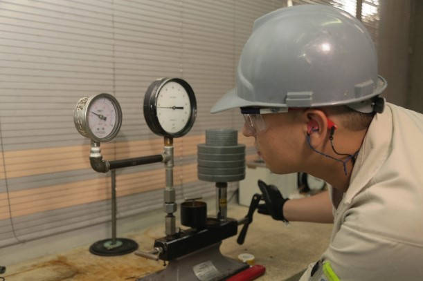

Mantenimiento
Nunca te detengas nosotros te ayudamos a mantener tus instrumentos siempre activos, simple bien.
Que ofrecemos?
- Inspección de condiciones de trabajo (Eléctricas y ambientales).
- Revisión de condiciones físicas externas del instrumento según requiera.
- Limpieza y lubricación externamente al instrumento
- Registro de lecturas indicadas por el instrumento contra patrones o estándares.
Que entregamos?
- Reporte de revisión. Da información sobre el estado inicial del equipo, condiciones de uso, componentes, instalación que puedan afectar su funcionamiento.
- Reporte de servicio. Se desglosa los cambios de piezas y refacciones realizados, nuestros expertos técnicos desglosan en forma escrita el estado final del instrumento.
- Etiqueta de mantenimiento. Muestra la fecha de mantenimiento del equipo.

Ullamco laboris nisi ut aliquip ex ea commodo consequat. Duis aute irure dolor in reprehenderit in voluptate velit esse cillum dolore eu fugiat nulla pariatur. Excepteur sint occaecat cupidatat non proident, sunt in culpa qui officia deserunt mollit anim id est laborum.
Saber mas